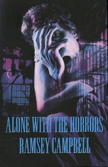

"Alone with the Horrors" by Ramsey Campbell is this rad collection of fantasy and horror stories. Dropped in '93 with a cool 3,834 copies, it's Campbell's fourth spooky story mash-up with Arkham House. It's all about taking you on a wild ride through his twisted and eerie tales from '61 to '91. Total chill-fest for horror fans!